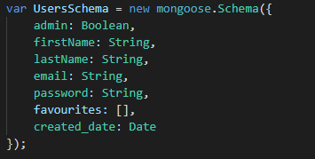
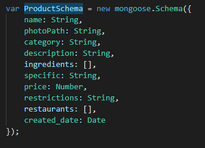
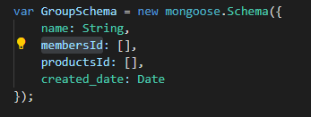

Food Organizer
Authors
- Mihaela Luca
- Alexandru Prajica
- Manuela Horduna
Project Description
Kung Food este o platforma pentru iubitori ai gastronomiei, unde pot cauta reteta unor feluri de mancare variate, precum si localuri din zona unde se poate gasi un anumit produs de pe site. De asemenea, platforma permite alcatuirea unei liste de cumparaturi, dar si posibilitatea de a face o lista de feluri de mancare favorite sau de a posta in grupul de care apartine.
Tehnologii folosite:
- HTML
- CSS/SCSS
- JavaScript
- Node.Js
- MongoDb/Mongoose (Cloud Atlas MongoDb)
Utilizari ale site-ului
Ca utilizator normal:⦁ Autentificare (login si register) ca utilizator normal sau admin
⦁ Posibilitatea utilizatorului de a alege dintr-o serie de categorii
⦁ Posibilitatea utilizatorului de a vedea mancarurile dintr-o anumita categorie
⦁ Posibilitatea utilizatorului de a vedea detalii despre un produs si o harta in sprijinul localizarii restaurantelor
⦁ Posibilitatea de a vedea si actualiza lista de feluri de mancare favorite intr-o pagina speciala pentru a putea reveni cu usurinta la acestea
⦁ Posibilitatea de a alcatui o lista de cumparaturi, unde utilizatorii pot adauga sau sterge elemente
⦁ Posibilitatea de a adauga un produs pe pagina grupului din care face parte utilizatorul
⦁ Posibilitatea de a vedea produsele postate pe pagina grupului din care face parte utilizatorul
Ca utilizator cu drepturi de admin, in plus:
⦁ Posibilitatea adminului de a vedea cateva statistici si de a le salva in format pdf
⦁ Posibilitatea adminului de a adauga un produs
⦁ Posibilitatea adminului de a vedea un top al favoritelor in format xml
Baza de date si API
API-uri externe
⦁ Google Maps APIBaza de date (NO SQL)
-
Tabela User:

-
Tabela Products

-
Tabela Groups

Arhitectura:
References:
GHID DE FOLOSIRE A APLICATIEIProject GitHub page: https://github.com/mihaellaluca/Proiect-TW